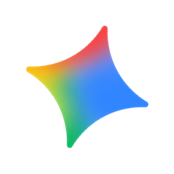
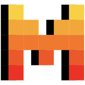
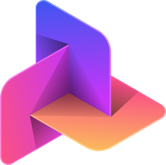
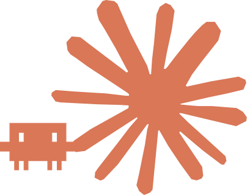
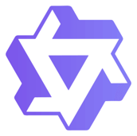
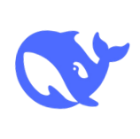
AI를 부리는 언어
AI를 이끄는 생각
언어, 생각, 그리고 인공지능 시대의 진로
ChatGPT · Gemini · Claude · Copilot · Perplexity · Grok · Qwen · DeepSeek …
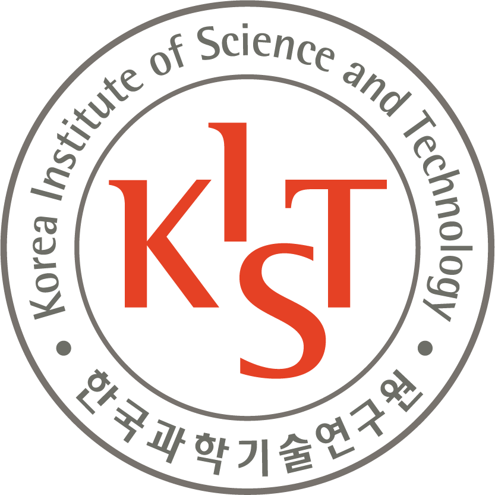
한국과학기술연구원 권나연Contents
도구로서의 언어
자연어 vs 기계어, 그리고 둘 사이의 거리
도구에서 하인으로
AI의 역사, LLM, 에이전트, 그리고 윤리
여전히 중요한 생각
AI 시대의 진로 — 만드는 사람, 활용하는 사람
도구로서의 언어
Language as a tool
언어는 생각을 표현하는 도구
자연어 (Natural Language)
인간이 일상생활에서 의사소통을 위해 사용하는 언어
- 말, 대화: 모국어 습득 혹은 외국어 학습
- 글, 문서: 문자·문법 학습, 글쓰기 훈련
- 한국어, 영어, 중국어, 수어(手語) …
기계어 (Machine Language)
CPU가 직접 해독하고 실행하는 비트 단위 코드
0과 1의 조합 — 컴퓨터가 이해하는 유일한 언어
자연어의 구조적 특징 (한국어)
- 중의성·다의성 — 같은 단어가 여러 의미를 가지는 경우가 많음
- 맥락 의존성 — 단어의 뜻이 상황·맥락에 따라 결정됨 → 번역의 어려움
- 합성성 — 작은 단위(단어)가 규칙에 따라 더 큰 단위(문장)의 의미를 형성
- 생략·비정형성 — 문장 성분 생략, 관용구 사용이 빈번
- 높임법과 뉘앙스 — 관계에 따라 어미·분위기가 달라짐
Q. 다음 단어는 영어로 어떻게 번역할까요?
🤔 한번 생각해보세요…
→ 한국어로는 같은 글자, 영어로는 전혀 다른 두 단어!
Q. 이번엔 영어 단어, 한국어로는?
🤔 한번 생각해보세요…
→ 모든 자연어에 중의성 — 맥락(context)이 의미를 결정한다
디자이너 김햄찌씨의 업무 중 피드백 🐹
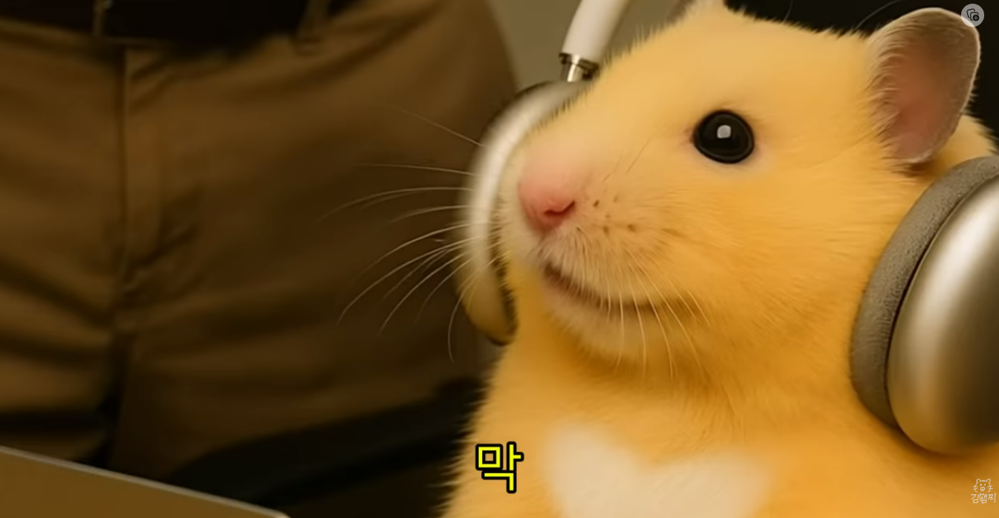
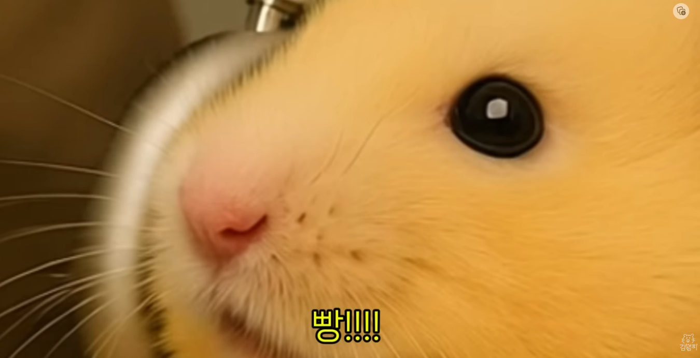
모호한 표현이 발생하는 이유
- 어휘적 모호성 — 다의어 (예: "정의", "frequency")
- 구조적 모호성 — 수식 관계나 문법 구조 (예: "예쁜 그녀의 동생")
- 영역 모호성 — 수량사나 부정어의 적용 범위 (예: "모두가 한 사람을 사랑한다")
- 맥락 의존성 — 정보 생략으로 청자가 추론해야 함 (예: "그거 좀 해줘")
기계어와 컴파일 (Compile)
사람은 0과 1만으로 프로그래밍하기 어렵다 → 고급 언어를 만들고, 컴파일러가 이를 기계어로 번역
→ 컴퓨터가 이해하도록 구조화·정형화된 명령으로 변환
생각의 구조화 도구로서의 언어
언어는 단순한 소통 수단이 아니라, 생각 자체의 형태를 만든다.
막연한 생각을 구조화하면 — 문제를 풀 수 있고, 지식이 된다.
🧩 문제 해결 (Problem Solving)
구조화된 언어로 표현하면 단계가 보이고, 단계가 보이면 풀 수 있다.
📚 지식의 재생산 (Reproduction)
구조화된 언어로 적힌 것은 누군가에게 전달되고, 다시 새로운 사람이 그 위에 쌓는다.
→ 그래서 인류는 구조화의 도구(문법·기호·수학·코드)를 끊임없이 발전시켜 왔다.
🧠 알고리즘 (Algorithm)이란?
생각을 구조화한 결과물 — 컴퓨터가 따라할 수 있는 형태로.
같은 생각도 자연어로 말할 때와 기계어로 시킬 때, 표현이 완전히 다르다.
"책장의 책을 키 순서대로 정리해 줘."
사람에게는 한 문장이면 되지만, 컴퓨터는 한 단계씩 풀어 설명해야 한다.
→ 어떤 알고리즘을 쓸 것인가?
A1. 버블 정렬 (Bubble Sort)
옆에 있는 책 두 권을 비교 → 키 큰 쪽이 오른쪽으로 자리 교환 → 끝까지 반복!
A2. 퀵 정렬 (Quick Sort)
기준책(pivot)을 골라 → 그보다 작은 책은 왼쪽, 큰 책은 오른쪽 → 분리한 그룹마다 재귀적으로 반복!
추상적 생각 → 구조화·구체화
구어 · 문어 · 프로그래밍
모두 생각을 표현한다는 점에서 같다. 단지 구조화의 정도가 다를 뿐.
- 생각 → 말 → 글 → 코드
- 점점 더 엄격한 규칙
- 재생산·이용이 용이해짐 (지식)
구조화 과정에서 잃는 정보
구조화 과정에서 코드화 불가능한 정보는 사라진다.
- 뉘앙스, 어조, 분위기
- 맥락, 함축적 의미
- 화자의 의도, 감정
도구에서 하인으로
From tools to agents
📈 인공지능 발전의 흐름 — Hype Curve
두 번의 'AI 겨울(Winter)'을 지나, AlexNet 이후 폭발적으로 성장한 AI 연구사
주요 마일스톤
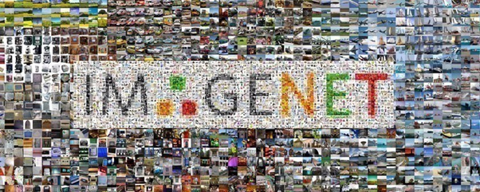
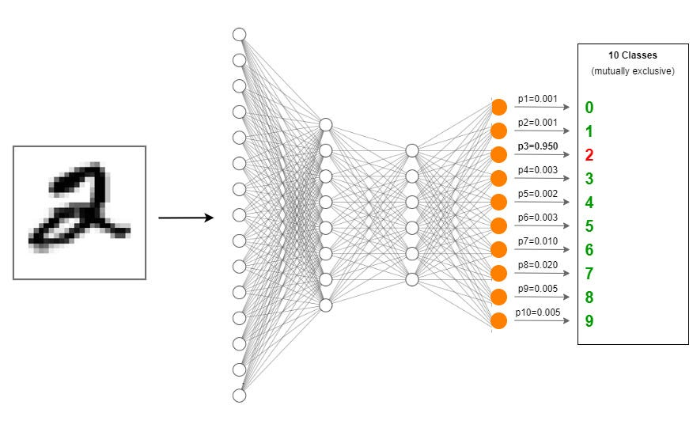
🚀 LLM의 비약적 발전 — Overview
단어를 벡터로 표현 → 문맥 이해 → 생성 → 대규모 사전학습 → 대중화.
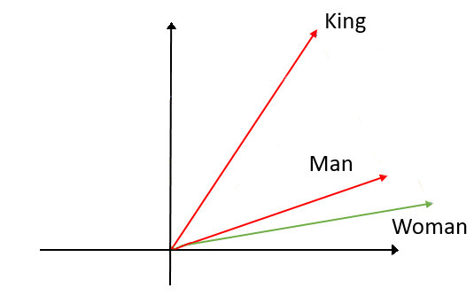
king − man + woman ≈ queen
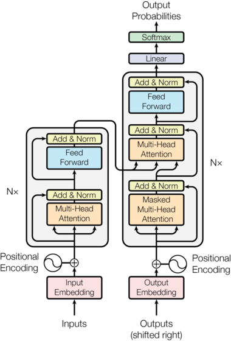
(현대 LLM 기반)
(이해 중심)
→ ChatGPT
RLHF · 대화형 인터페이스
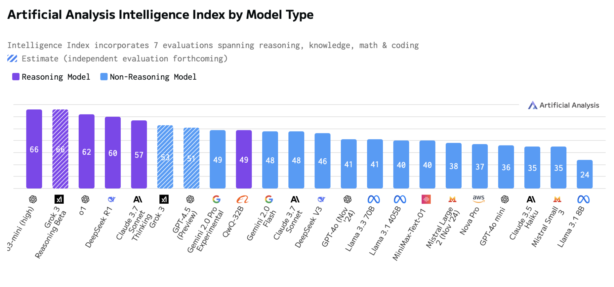
Gemini, 추론모델
추론·코딩 능력 비약
word2vec
단어의 의미를 벡터로 표현 — "의미가 좌표가 된다"
각 단어를 수백 차원의 실수 벡터로 변환. 의미가 비슷한 단어는 벡터 공간에서 가깝게 자리잡는다.
벡터 산술이 의미적 관계를 표현한다:
→ "의미"가 좌표상의 방향이 된다.
왜 중요한가: 컴퓨터가 "단어"를 처음으로 수학적으로 다룰 수 있게 됨. 이후 모든 LLM의 기초.
Transformer
"Attention is All You Need" — 현대 LLM의 기반 아키텍처
이전의 RNN은 단어를 순서대로 하나씩 처리 → 느리고 긴 문맥에 약함.
Transformer는 모든 단어를 동시에 보면서, Attention으로 어떤 단어가 어떤 단어를 더 봐야 할지 학습.
왜 중요한가: 이후 등장한 BERT·GPT·Claude·Gemini가 전부 이 위에서 만들어졌다.
BERT
양방향 문맥으로 '이해'하는 모델 (Google)
문장의 일부 단어를 가리고([MASK]) 맞추도록 학습.
왼쪽뿐 아니라 오른쪽 문맥까지 함께 보기 때문에 "이해" 능력이 강함.
'이해 중심' BERT vs '생성 중심' GPT — 두 노선이 갈라진다.
GPT 시리즈 → ChatGPT
"생성"의 거대화 — 그리고 대화 인터페이스의 폭발
GPT(Generative Pre-trained Transformer): 다음 단어 예측만으로 학습 → 거대화하니 모든 것을 잘하게 됨.
2022년 ChatGPT는 RLHF(인간 피드백 강화학습)로 "지시 따르기"를 학습 → 대화형 인터페이스로 일반 사용자에게 충격을 줌.
추론 모델 → 에이전트
GPT-4 · o1 · Claude — "생각"하는 모델에서 "행동"하는 구조로
추론 모델: 답하기 전에 중간 사고 과정(Chain-of-Thought)을 거치며, 모순이 보이면 되돌아가 수정한다. OpenAI GPT-4 → o1·o3 → GPT-5, Anthropic Claude 3 → 4 → Opus 4.5로 이어지며 수학·코딩·과학에서 비약적 성능 향상.
멀티모달(Multimodal): 텍스트만이 아니라 이미지·음성·영상·코드까지 한 모델이 입력받고 만들어낸다 — 보고, 듣고, 말하는 AI.
Agent 구조: 계획 → 도구 사용 → 결과 관찰 → 다시 계획. 모델이 스스로 여러 단계를 나눠 실행한다.
RAG(검색 증강 생성): 웹·사내 문서·논문을 직접 검색해 근거와 함께 답변 — 모델 안에 갇힌 지식을 검색으로 확장.
🚗 피지컬 AI ① — 자율주행 (Waymo)
🌍 월드 모델 (World Model)
Sora·Veo·Genie — 영상을 생성하며 물리 법칙과 공간을 학습한 AI. "이렇게 행동하면 세계가 어떻게 변할까"를 시뮬레이션하는 두뇌.
🚘 도로 위의 실시간 판단
라이다·카메라로 세계를 3D로 인식하고, 월드 모델로 다른 차·보행자의 다음 움직임을 예측하며 스스로 운전한다.
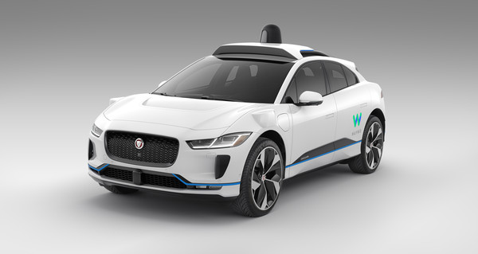
🤖 피지컬 AI ② — 휴머노이드 협동 (Atlas × Optimus)
🦾 로보틱스의 발전
Boston Dynamics Atlas, Tesla Optimus, Figure — LLM 추론 + 비전 + 행동(VLA 모델)로 물리 세계에서 작업을 수행한다.
🤝 협동 작업과 집안일
로봇끼리 물건을 주고받아 옮기고, 정리·청소 같은 집안일을 분담한다 — 언어 지시가 곧 작업 계획이 되는 시대.
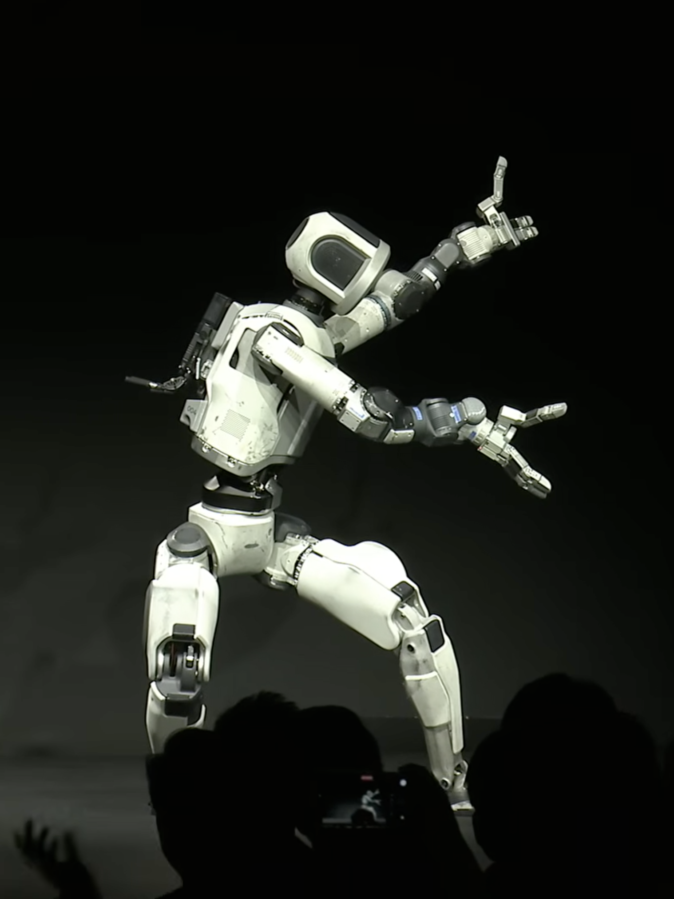
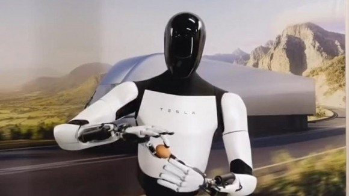
🎬 LLM 내부는 어떻게 작동하나 (3Blue1Brown)
Embedding → Attention → MLP → Unembedding — 단어가 벡터가 되어 흘러가는 과정.
출처: 3Blue1Brown
🌀 환각(Hallucination) — 그럴듯한 거짓말
AI는 존재하지 않는 출처를 만들어내고, 그럴듯한 오답을 자신 있게 말한다. 받아들일지 판단하는 것은 결국 사용자의 몫이다.
가짜 출처
존재하지 않는 논문·기사·판례를 진짜처럼 인용한다 → 출처를 직접 확인하고 검증하는 습관을 길러야 한다
코드 생성의 함정
중복되거나 양이 많아 비효율적이고, 보안 '구멍'도 생긴다 → 문제를 알아보고, 수정·개선할 지식과 기술이 여전히 필요하다
정확한 지시
시키는 일 자체를 알고 있어야 정확히 지시할 수 있고, 결과가 맞는지 평가할 수 있다
이 비용을 최적화하는 것은 여전히 인간의 영역 — 그래서 '지식' · '기술' · '비판적 사고'가 여전히 중요하다.
여전히 중요한 생각
Ideas still matter — AI 시대의 진로
🧠 AI Literacy의 기저 — 전통적 '인간의 지성'
AI를 잘 쓰려면 결국 스스로 생각할 줄 아는 사람이어야 한다.
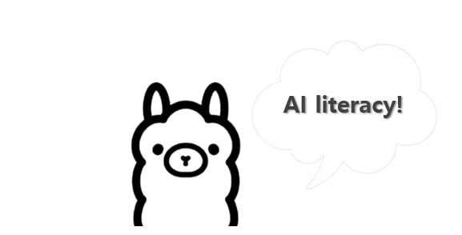
왜 '인간의 지성'이 더 중요해지는가
AI가 그럴듯한 답을 빠르게 만들어 주는 시대일수록, 그 답을 받아들일지 말지 판단하는 힘은 더 결정적이다.
AI Literacy는 도구 사용법이 아니라, 생각하는 힘 위에 얹는 능력이다.
"AI는 좋은 답을 만든다. 좋은 질문은 인간이 만든다."
비판적 사고력
AI 출력의 사실 여부·논리·편향을 의심하고 검증할 수 있는가
물리적 인지 능력
기억력 · 추론력 · 집중력. 외부에 맡기지 않고 머리에 담아두는 힘
구조화·표현력
생각을 명확한 언어로 정리해서 AI에게 전달하고, 결과를 사람에게 설명할 수 있는가
특히 '능동적·비판적'으로 읽어내고 파악하는 힘이 핵심이다.
⚖️ 그래서 '윤리'도 중요해졌다
AI가 강력해질수록, literacy 못지 않게 윤리(ethics)가 중요한 역량이 되었다.
🎭 환각 (Hallucination)
그럴듯하지만 틀린 정보를 만들어냄. 검증·인용 책임은 사용자에게.
🪞 편향 (Bias)
학습 데이터의 편견을 그대로 학습·증폭. 성·인종·문화 편견 등.
🔐 프라이버시·저작권
학습 데이터의 출처, 개인정보, 창작물 권리 침해 문제.
🎬 딥페이크·정보 조작
영상 생성 AI로 가짜 뉴스·여론 조작이 쉬워짐.
🌍 환경·에너지
거대 모델 학습·운영의 전력 소모. 데이터센터 탄소 배출.
💼 일자리·격차
대체 가능한 일과 그렇지 않은 일. AI 활용 능력에 따른 격차.
→ AI를 잘 쓰는 능력과 함께, 책임지고 쓰는 자세가 필요한 시대
AI 시대, 인간이 가질 두 갈래의 역할
① 더 훌륭한 하인을 만드는 인간
AI를 만드는 사람 — 개발자·연구자
- 언어 모델 연구 (NLP·ML 엔지니어)
- 물리·월드 모델 (로보틱스·자율주행)
- AI 인프라·시스템 (GPU 자원 배분, 분산 학습)
- AI 안전·정렬 (Safety & Alignment)
② 하인을 더 잘 활용하는 인간
AI를 활용하는 사람 — AI Literacy
- 좋은 질문을 던지는 능력 (문제 정의)
- 맥락·뉘앙스를 이해하고 전달
- 비판적 사고 — AI 출력 검증
- 윤리적 판단 — 책임 있는 사용
⚙️ AI를 만드는 사람 — 세부 직군
'모델만 만드는' 시대는 끝났다. 데이터·인프라·안전까지 다층적 생태계
💡 인프라 배분 문제: 거대 모델 학습에는 수천 개의 GPU와 막대한 전력이 필요. "누가 어떤 모델에 자원을 쓸 것인가?"가 중요한 의사결정 영역이 되었다.
🧠 AI를 활용하는 사람 — 모든 직군이 바뀐다
'AI + 전문성'의 결합이 새로운 표준
→ 어떤 직업이든 "AI를 도구로 잘 쓰는 사람"이 그렇지 못한 사람보다 압도적인 생산성
외고 학생들에게 — 왜 "언어"가 무기인가
- 핵심은 언어를 구조적으로 이해하고 정확하게 전달하는 능력 — 표현력 · 구조화 · 논리력 · 사고력
- 타인의 고맥락(high-context) 언어를 구체적으로 이해하는 능력 — 모호함과 뉘앙스를 정확한 의미로 풀어내는 일은 여전히 인간의 영역
- 좋은 프롬프트는 좋은 글쓰기 — 명확한 구조, 정확한 단어, 적절한 예시
- 외국어 학습은 다른 사고 체계를 익히는 일 — AI를 깊이 이해하는 기반
- 만들든 활용하든, 생각의 구조화 능력이 핵심 — 그 위에 반드시 필요한 것이 윤리적 판단
"AI가 지배하는 세상이
오는 거 아닌가요?"
스카이넷처럼?
→ 그 답은 우리가 어떻게 만들고, 어떻게 쓰느냐에 달려있다.
개발자가 만들고, 활용자가 검증하고, 모두가 윤리적으로 책임지는 — 그게 인간의 몫
생각하라,
그리고 표현하라.
AI는 도구다. 도구를 이끄는 것은 언제나 인간의 생각이다.
감사합니다 🙏